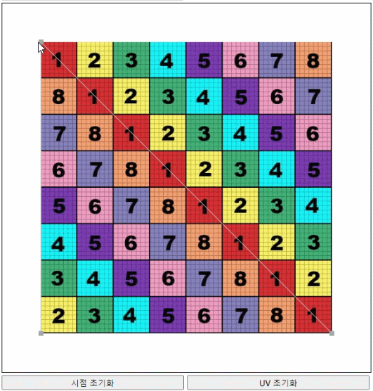
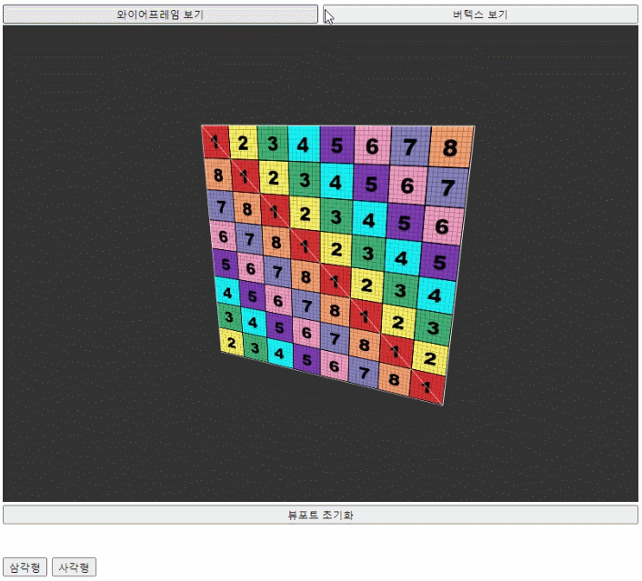
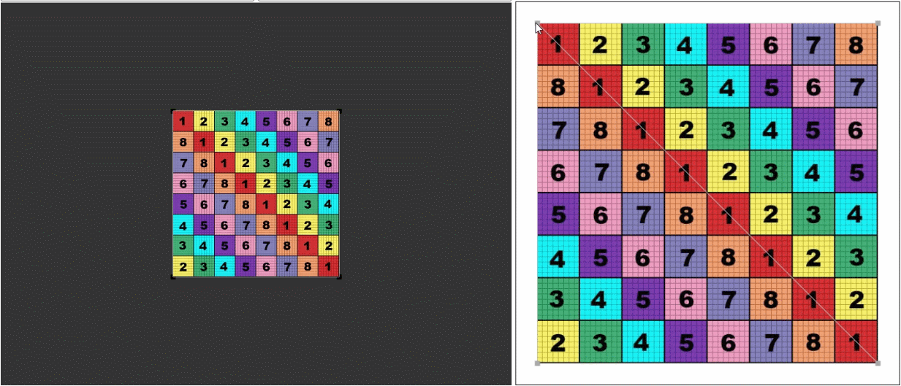

우선 첫 페이지에서는 가장 기초인 삼각면, 사각면을 다룹니다.
위의 좌측 캔버스가 3D 모델 뷰이고, 우측 캔버스는 텍스쳐 좌표계를 보기 쉽게 구현한 것입니다.
좌측 위 버튼을 통하여 삼각면, 사각면이 선택 가능합니다. 사각면은 기존 삼각형의 우상단에 다른 삼각면을 이어 붙인 것입니다.
구현 기능들
우측 캔버스 위에서 매핑된 uv 좌표를 마우스로 조작할 수 있습니다. 마우스 휠을 돌려 화면을 확대/축소 시킬 수 있습니다. 이 시점이나 uv좌표를 원래대로 초기화시키는 버튼은 따로 있습니다.

좌측 캔버스에서는 매핑이 된 3D모델을 볼 수 있습니다. 마우스로 회전이 가능하고 휠로 화면을 확대/축소 시킬 수 있습니다. 와이어프레임, 버텍스를 보이게 하는 것도 가능합니다.

uv좌표를 수정하면 바로 관찰할 수 있습니다. 그리고 uv좌표 상에서 선택된 버텍스는 좌/우 캔버스 모두에서 색이 붉게 바뀝니다.

마지막으로 우측 캔버스에서 uv좌표가 0~1을 벗어날 경우 어떤 방식으로 텍스쳐가 적용되는지 볼 수 있습니다.